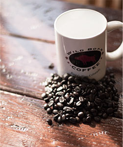

The Wild Boar Cafe is an independent and locally owned business providing a unique and tranquil environment
in which to study, work, or meet with friends. In addition to serving some of the best coffee in Fort Collins,
we offer a full menu prepared fresh in our kitchen, far beyond the usual coffee shop snacks.
We also carry a first-rate selection of craft beers from breweries both down the street and around the world.
Our family and staff will do whatever we can to make your experience at the Boar a memorable one.

We do a good share of our own gardening. We also compost as much of our yard, kitchen, and coffee waste as possible
on-site, and encourage our green-thumbed customers to pick up spent coffee grounds for their own compost piles. All
of our recyclable waste materials are sorted and dropped off at a city recycling center by our owners and staff.
We respect the health and lifestyle choices of our customers, and do our best to meet their dietary needs. Our cafe
offers soy and almond milk-alternatives for coffee. We keep one shelf of our pastry case fully stocked with
delicious gluten-free pastries from Gluten Bootin Bakery, and we can prepare most of our sandwiches on Udi's
gluten-free bread. Our breakfast and lunch menus include a wide variety of vegetarian options. That said, we're also
happy to add bacon to anything you can think of.